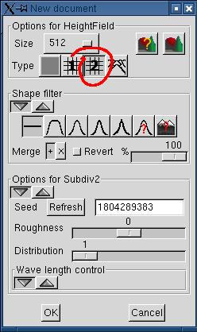
Create a new document of your choice. Here I used "subdivision #2" with default parameters.
Create a new document of your choice. Here I used "subdivision #2" with default parameters.
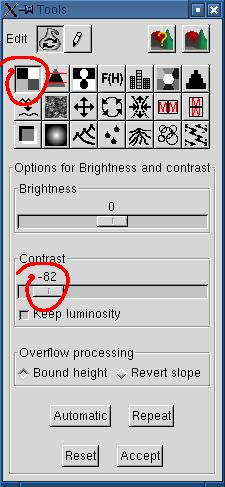 If you want to visually emphasize the
altitude difference of the fault, you need to lessen the contrast.
I chosed to draw the fault diagonally for this example. You can move the fault by dragging the ends of the red control line.
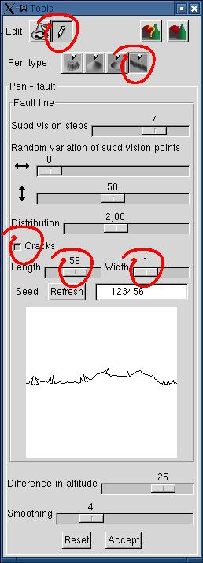
Check the "cracks" box for creating basic cracks. We'll use the rain
erosion tool to increase their realism.Adjust the cracks length and width to your taste.
The cracks length (depth) is an arbitrary value, proportional to the length of the current subdivision segment.
The cracks width is proportional to the number of subdivision steps. A width of 1 means that each crack is drawn during the last subdivision, a width of 2 means that each crack is drawn during the next to last subdivision (so it's wider), and so on.
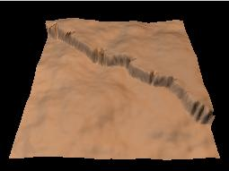
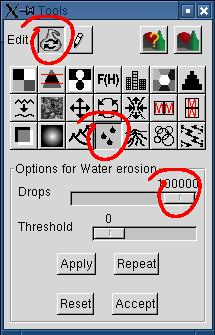 We'll use the water erosion tool to improve the fault realism.
Repeat the process at will.
Like shown on the terrain rendered with Povray at right, the whole terrain is eroded. Furthermore, the erosion channels seem to run separated with a square angle. This looks unnatural (this is a weakness of the actual erosion algorithm). It would be better if only the fault were subsiding.
Notice that the Povray image was generated with the following preview parameters, automatically transfered to the simple_terrain.pov scene definition:
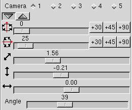
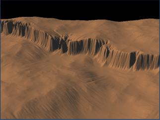
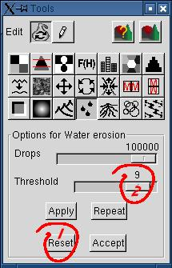 If you want to restrict the erosion to the fault, you only have to increase the threshold, so that only the very steep slopes would be eroded. Given the low contrast of the original terrain, the remainder of the terrain wouldn't be affected.
Hit "Reset" to restart from the original terrain. It'll work even if you have repeated the erosion more than once, as long as you didn't hit "Accept".
The image at right was produced with 3x100000 drops, on a 512x512 height field.

Even if we used a tool called "Rain erosion", the result could also be believable for a gravity erosion (subsidence). So, nothing precludes adding craters, like those we could see on planets without rain!
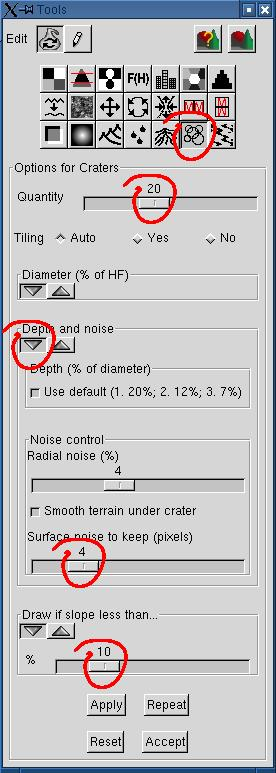
In our example, 20 craters were distributed on the surface.
The surface noice to keep was increased from 2 to 4 pixels, otherwise the craters surface looked too smooth.
Craters dropped on steep altitude differences look unnatural (at least in Geomorph!). To avoid dropping craters right over the fault, activate the "Draw if slope less than..." parameter.
The chosen value (10) means the a crater wouldn't be drawn if the maximum altitude difference under the crater is greater than 10% of the maximum terrain height (65535).
The view angle was adjusted in the preview (at right) to hide the skyline, otherwise cut craters could be seen at the terrain edge.
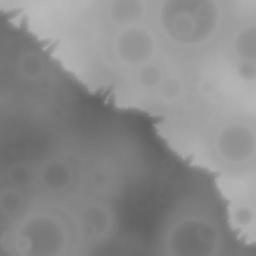
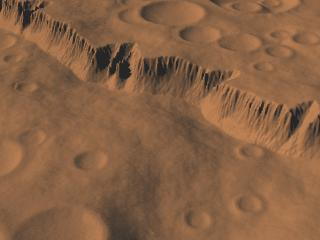
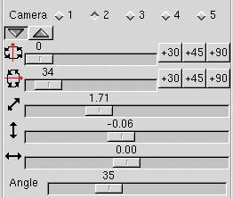